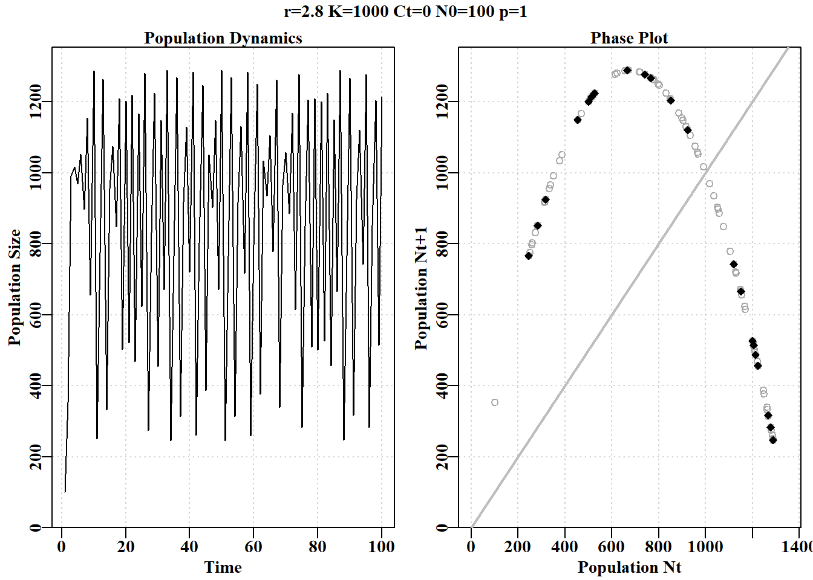
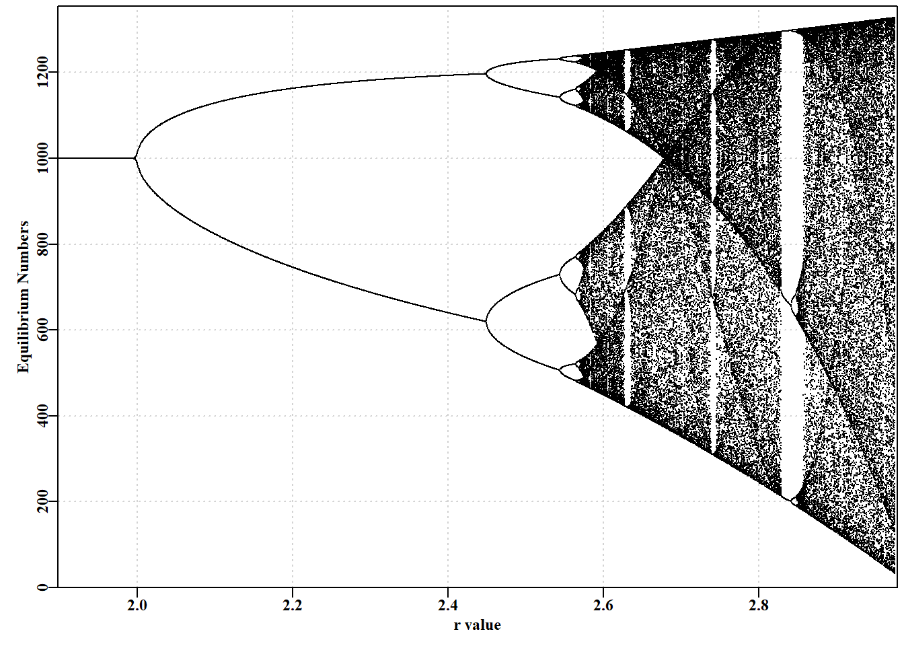
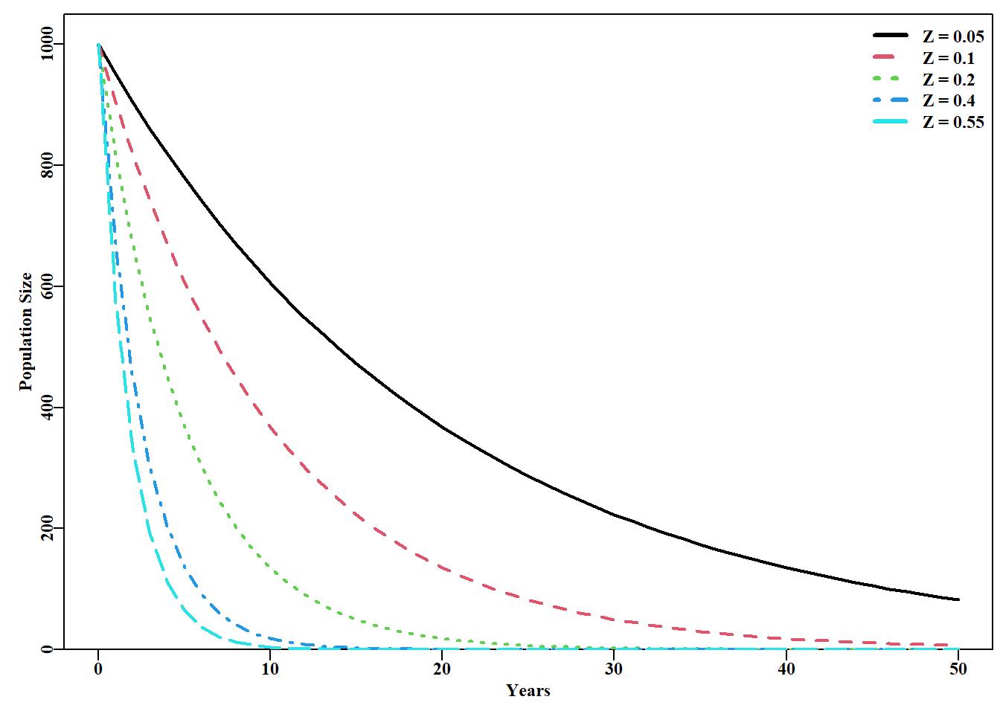
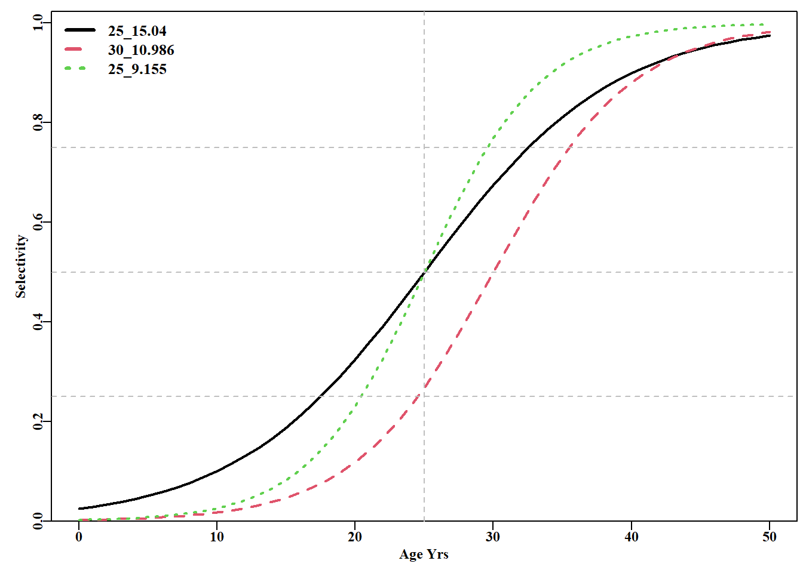

#Code for Figure 3.2. Try varying the value of rv from 0.5-2.8 yrs<-100; rv=2.8; Kv<-1000.0; Nz=100; catch=0.0; p=1.0ans<-discretelogistic(r=rv,K=Kv,N0=Nz,Ct=catch,Yrs=yrs,p=p)avcatch<-mean(ans[(yrs-50):yrs,"nt"],na.rm=TRUE)#used in text label<-paste0("r=",rv," K=",Kv," Ct=",catch, " N0=",Nz," p=",p=p)plot(ans, main=label, cex=0.9, font=7)#Schaefer dynamics

图 3.2: Schaefer 模型动态。左图是按年份的数值，展示了从 r 值为 2.8 开始的混沌动态。右图是时间 t+1 的数值与时间 t 的关系，称为相图。最后 20%的点用红色标出以展示任何平衡行为。灰色对角线是 1:1 线。
我们可以通过求 ans 中 \(nt\) 和 \(Nt1\) 列的行平均值来找到一个稳定的限制循环，查看最后 100 个值(四舍五入到小数点后三位)。table() 函数的名称标识循环点的值(如果有的话)。如果只有一个或两个平均值来确定一个渐近平衡或一个两周期稳定的限制循环。通过检查每个 ans 对象中值的时间序列，可以搜索所标识值的首次出现，从而确定循环行为（精确到小数点后三位）何时首次出现。我们将这些值四舍五入，并使用 600 年或更长的时间，因为如果我们使用所有 15 位小数，任何超过 8 的循环都可能无法被清楚地识别出来（尝试将 r = 2.63 更改为 5；并试着用 plot(ans) 绘图）。
代码
#run discretelogistic and search for repeated values of Nt yrs<-600ans<-discretelogistic(r=2.55,K=1000.0,N0=100,Ct=0.0,Yrs=yrs)avt<-round(apply(ans[(yrs-100):(yrs-1),2:3],1,mean),2)count<-table(avt)count[count>1]# with r=2.55 you should find an 8-cycle limit
我们可以建立一个程序来寻找 \(r\) 的值生成不同周期的稳定限制环，尽管下面的代码只是部分成功。通过设置一个 for 循环，将不同的值替换为 \(r\) 值输入到 discretelogistic()，我们可以搜索一个长时间序列的最后几年在数值的时间序列中唯一的值。然而，四舍五入误差可能会导致意想不到的结果，特别是在不同类型的动态行为之间的边界。我们可以通过将检查的数值四舍五入到小数点后三位来避免这些问题，但请尝试在下面的代码中散列该行，以查看问题变得更糟。
代码
#searches for unique solutions given an r value see Table 3.2testseq<-seq(1.9,2.59,0.01)nseq<-length(testseq)result<-matrix(0,nrow=nseq,ncol=2, dimnames=list(testseq,c("r","Unique")))yrs<-600for(iin1:nseq){# i = 31 rval<-testseq[i]ans<-discretelogistic(r=rval,K=1000.0,N0=100,Ct=0.0,Yrs=yrs)ans<-ans[-yrs,]# remove last year, see str(ans) for why ans[,"nt1"]<-round(ans[,"nt1"],3)#try hashing this out result[i,]<-c(rval,length(unique(tail(ans[,"nt1"],100))))}
#the R code for the bifurcation function bifurcation<-function(testseq,taill=100,yrs=1000,limy=0,incx=0.001){nseq<-length(testseq)result<-matrix(0,nrow=nseq,ncol=2, dimnames=list(testseq,c("r","Unique Values")))result2<-matrix(NA,nrow=nseq,ncol=taill)for(iin1:nseq){rval<-testseq[i]ans<-discretelogistic(r=rval,K=1000.0,N0=100,Ct=0.0,Yrs=yrs)ans[,"nt1"]<-round(ans[,"nt1"],4)result[i,]<-c(rval,length(unique(tail(ans[,"nt1"],taill))))result2[i,]<-tail(ans[,"nt1"],taill)}if(limy[1]==0)limy<-c(0,getmax(result2,mult=1.02))parset()# plot taill values against taill of each r value plot(rep(testseq[1],taill),result2[1,],type="p",pch=16,cex=0.1, ylim=limy,xlim=c(min(testseq)*(1-incx),max(testseq)*(1+incx)), xlab="r value",yaxs="i",xaxs="i",ylab="Equilibrium Numbers", panel.first=grid())for(iin2:nseq)points(rep(testseq[i],taill),result2[i,],pch=16,cex=0.1)return(invisible(list(result=result,result2=result2)))}# end of bifurcation
代码
#Alternative r value arrangements for you to try; Fig 3.3 #testseq <- seq(2.847,2.855,0.00001) #hash/unhash as needed #bifurcation(testseq,limy=c(600,740),incx=0.0001) # t #testseq <- seq(2.6225,2.6375,0.00001) # then explore #bifurcation(testseq,limy=c(660,730),incx=0.0001) testseq<-seq(1.9,2.975,0.0005)# modify to explore bifurcation(testseq,limy=0)

图 3.3: Schaefer 模型动态。一个经典的分岔图（May，1976），绘制了平衡动态与 r 值的函数关系，展示了从 2-、4-、8-循环以及混沌行为的转变。
#Effect of catches on stability properties of discretelogistic yrs=50; Kval=1000.0nocatch<-discretelogistic(r=2.56,K=Kval,N0=500,Ct=0,Yrs=yrs)catch50<-discretelogistic(r=2.56,K=Kval,N0=500,Ct=50,Yrs=yrs)catch200<-discretelogistic(r=2.56,K=Kval,N0=500,Ct=200,Yrs=yrs)catch300<-discretelogistic(r=2.56,K=Kval,N0=500,Ct=300,Yrs=yrs)
#Effect of different catches on n-cyclic behaviour Fig3.4 plottime<-function(x,ylab){yrs<-nrow(x)plot1(x[,"year"],x[,"nt"],ylab=ylab,defpar=FALSE)avB<-round(mean(x[(yrs-40):yrs,"nt"],na.rm=TRUE),3)mtext(avB,side=1,outer=F,line=-1.1,font=7,cex=1.0)}# end of plottime #the oma argument is used to adjust the space around the graph par(mfrow=c(2,2),mai=c(0.25,0.4,0.05,0.05),oma=c(1.0,0,0.25,0))par(cex=0.75, mgp=c(1.35,0.35,0), font.axis=7,font=7,font.lab=7)plottime(nocatch,"Catch = 0")plottime(catch50,"Catch = 50")plottime(catch200,"Catch = 200")plottime(catch300,"Catch = 300")mtext("years",side=1,outer=TRUE,line=-0.2,font=7,cex=1.0)
#Phase plot for Schaefer model Fig 3.5 plotphase<-function(x,label,ymax=0){#x from discretelogistic yrs<-nrow(x)colnames(x)<-tolower(colnames(x))if(ymax[1]==0)ymax<-getmax(x[,c(2:3)])plot(x[,"nt"],x[,"nt1"],type="p",pch=16,cex=1.0,ylim=c(0,ymax), yaxs="i",xlim=c(0,ymax),xaxs="i",ylab="nt1",xlab="", panel.first=grid(),col="darkgrey")begin<-trunc(yrs*0.6)#last 40% of yrs = 20, when yrs=50 points(x[begin:yrs,"nt"],x[begin:yrs,"nt1"],pch=18,col=1,cex=1.2)mtext(label,side=1,outer=F,line=-1.1,font=7,cex=1.2)}# end of plotphase par(mfrow=c(2,2),mai=c(0.25,0.25,0.05,0.05),oma=c(1.0,1.0,0,0))par(cex=0.75, mgp=c(1.35,0.35,0), font.axis=7,font=7,font.lab=7)plotphase(nocatch,"Catch = 0",ymax=1300)plotphase(catch50,"Catch = 50",ymax=1300)plotphase(catch200,"Catch = 200",ymax=1300)plotphase(catch300,"Catch = 300",ymax=1300)mtext("nt",side=1,outer=T,line=0.0,font=7,cex=1.0)mtext("nt+1",side=2,outer=T,line=0.0,font=7,cex=1.0)
#Exponential population declines under different Z. Fig 3.6 yrs<-50; yrs1<-yrs+1# to leave room for B[0] years<-seq(0,yrs,1)B0<-1000# now alternative total mortality rates Z<-c(0.05,0.1,0.2,0.4,0.55)nZ<-length(Z)Bt<-matrix(0,nrow=yrs1,ncol=nZ,dimnames=list(years,Z))Bt[1,]<-B0for(jin1:nZ)for(iin2:yrs1)Bt[i,j]<-Bt[(i-1),j]*exp(-Z[j])plot1(years,Bt[,1],xlab="Years",ylab="Population Size",lwd=2)if(nZ>1)for(jin2:nZ)lines(years,Bt[,j],lwd=2,col=j,lty=j)legend("topright",legend=paste0("Z = ",Z),col=1:nZ,lwd=3, bty="n",cex=1,lty=1:5)

图 3.6: 不同总死亡率水平下的指数型种群衰退。最上方的曲线是 Z = 0.05，最陡峭的曲线是 Z = 0.55。
#Prepare matrix of harvest rate vs time to appoximate F Z<--log(0.5)timediv<-c(2,4,12,52,365,730,2920,8760,525600)yrfrac<-1/timedivnames(yrfrac)<-c("6mth","3mth","1mth","1wk","1d","12h", "3h","1h","1m")nfrac<-length(yrfrac)columns<-c("yrfrac","divisor","yrfracH","Remain")result<-matrix(0,nrow=nfrac,ncol=length(columns), dimnames=list(names(yrfrac),columns))for(iin1:nfrac){timestepmort<-Z/timediv[i]N<-1000for(jin1:timediv[i])N<-N*(1-timestepmort)result[i,]<-c(yrfrac[i],timediv[i],timestepmort,N)}
# Simple Yield-per-Recruit see Russell (1942) age<-1:11; nage<-length(age); N0<-1000# some definitions # weight-at-age values WaA<-c(NA,0.082,0.175,0.283,0.4,0.523,0.7,0.85,0.925,0.99,1.0)# now the harvest rates H<-c(0.01,0.06,0.11,0.16,0.21,0.26,0.31,0.36,0.55,0.8)nH<-length(H)NaA<-matrix(0,nrow=nage,ncol=nH,dimnames=list(age,H))# storage CatchN<-NaA; CatchW<-NaA# define some storage matrices for(iin1:nH){# loop through the harvest rates NaA[1,i]<-N0# start each harvest rate with initial numbers for(agein2:nage){# loop through over-simplified dynamics NaA[age,i]<-NaA[(age-1),i]*(1-H[i])CatchN[age,i]<-NaA[(age-1),i]-NaA[age,i]}CatchW[,i]<-CatchN[,i]*WaA}# transpose the vector of total catches to totC<-t(colSums(CatchW,na.rm=TRUE))# simplify later printing
#Logistic S shaped cureve for maturity ages<-seq(0,50,1)sel1<-mature(-3.650425,0.146017,sizeage=ages)#-3.65/0.146=25 sel2<-mature(-6,0.2,ages)sel3<-mature(-6,0.24,ages)plot1(ages,sel1,xlab="Age Yrs",ylab="Selectivity",cex=0.75,lwd=2)lines(ages,sel2,col=2,lwd=2,lty=2)lines(ages,sel3,col=3,lwd=2,lty=3)abline(v=25,col="grey",lty=2)abline(h=c(0.25,0.5,0.75),col="grey",lty=2)legend("topleft",c("25_15.04","30_10.986","25_9.155"),col=c(1,2,3), lwd=3,cex=1.1,bty="n",lty=1:3)

图 3.9: 使用 mature() 函数的逻辑斯蒂 S 形曲线示例。图例包含每条曲线的 L50 和 IQ，其参数在代码中定义。
当目标是最大化产量时，这样的分析是有意义的。但是，恒定补充量的假设和对不确定性的忽视意味着这些分析通常不是保守的。人们尝试改进 YPR 分析提出的建议，其中比较有用的是 \(F_{0.1}\) 的出现(发音为 F zero point one)。定义为产量曲线起点处产量增长率 1/10 的渔获率 (Hilborn 和 Walters 1992)。\(F_{0.1}\) 的优势这是捕捞努力量的相对 大幅下降，只会导致产量的很小损失。这可以提高渔业的经济效益和可持续性。然而，本质上使用 \(F_{0.1}\) 仍然是一个经验规则，它在实践中比 \(F_{max}\) （最高产量点）更可持续，通常比 \(F_{msy}\) (平衡时可产生 MSY 的捕捞死亡率)更好。
代码
# A more complete YPR analysis age<-0:20; nage<-length(age)#storage vectors and matrices laa<-vB(c(50.0,0.25,-1.5),age)# length-at-age WaA<-(0.015*laa^3.0)/1000# weight-at-age as kg H<-seq(0.01,0.65,0.05); nH<-length(H)FF<-round(-log(1-H),5)# Fully selected fishing mortality N0<-1000M<-0.1numt<-matrix(0,nrow=nage,ncol=nH,dimnames=list(age,FF))catchN<-matrix(0,nrow=nage,ncol=nH,dimnames=list(age,FF))as50<-c(1,2,3)yield<-matrix(0,nrow=nH,ncol=length(as50),dimnames=list(H,as50))for(selin1:length(as50)){sa<-logist(as50[sel],1.0,age)# selectivity-at-age for(harvin1:nH){Ft<-sa*FF[harv]# Fishing mortality-at-age out<-bce(M,Ft,N0,age)numt[,harv]<-out[,"Nt"]catchN[,harv]<-out[,"Catch"]yield[harv,sel]<-sum(out[,"Catch"]*WaA,na.rm=TRUE)}# end of harv loop }# end of sel loop
代码
#A full YPR analysis Figure 3.10 plot1(H,yield[,3],xlab="Harvest Rate",ylab="Yield",cex=0.75,lwd=2)lines(H,yield[,2],lwd=2,col=2,lty=2)lines(H,yield[,1],lwd=2,col=3,lty=3)legend("bottomright",legend=as50,col=c(3,2,1),lwd=3,bty="n", cex=1.0,lty=c(3,2,1))
在本章中，我们只考虑了简单的种群模型，但我们也可以很好地使用 R 来探索物种之间在竞争、捕食、寄生、共生等过程中的相互作用。所有的早期模型(Lotka，1925；Wolterra，1927；Gause，1934)考虑了没有空间结构的种群。使用 R 会相对直接地增加这种模型的复杂性，并包括空间细节，如 Huffaker(1958) 的实验探索。Huffaker 后来的一些实验性捕食者-补捕食者安排持续了 490 天。在这种情况下，模拟研究对于扩展探索的可能性非常有用。这样有趣的工作将需要成为另一本书的一部分，因为在渔业领域，我们还有许多其他领域需要探索和讨论。
使用 R 作为进行此类模拟的工具，使得分析比在电子表格上布置参数操作更抽象。然而，代码块和已开发函数的可重用性，以及更复杂模型和函数的增量开发的潜力所带来的优势，超过了编程环境的更抽象的本质。使用 R 作为一种编程语言来开发这些不同的分析非常适合渔业和生态建模工作。
QUINN, TERRANCE J. 2003. 《RUMINATIONS ON THE DEVELOPMENT AND FUTURE OF POPULATION DYNAMICS MODELS IN FISHERIES》. Natural Resource Modeling 16 (4): 341–92. https://doi.org/10.1111/j.1939-7445.2003.tb00119.x.
Quinn, Terrance J., 和 Richard B. Deriso. 1999. Quantitative Fish Dynamics. Biological Resource Management. Oxford, New York: Oxford University Press.
Russell, E. S. 1942. The Overfishing Problem. CUP Archive.
Schaefer, M. 1991. 《Some Aspects of the Dynamics of Populations Important to the Management of the Commercial Marine Fisheries》. Bulletin of Mathematical Biology 53 (1-2): 253–79. https://doi.org/10.1016/s0092-8240(05)80049-7.
源代码
# 简单种群模型 {#sec-simplemodel}## 简介简单的种群模型构成了众多渔业模型的基础，事实上，渔业模型与生态种群模型的区别只是人为的划分。理解任何种群模型的运行方式都将有助于更好地理解渔业模型，因此在本章中，我们将使用R来检验种群生物学中的一些基本思想的动力学。```{r}#| echo: falselibrary(MQMF)library(knitr)```### 离散Logistic模型我们将首先考察已成为生态学中经典种群模型之一的离散逻辑斯蒂模型所展示的动力学。这种模型出现在许多地方，以许多不同的形式出现，因此值得进行一些详细的探索。这里我们将使用 [@schaefer1991] Schaefer(1954, 1957)版本，它有四个组成部分或项:$$\begin{aligned}N_{t=0} &= N_0 \\N_{t+1} &= N_t + rN_t \left(1-\left(\dfrac{N_t}{K} \right) \right) -C_t\end{aligned}$$ {#eq-3_1}$N_t$ 项为时间 $t$ 时的数量（如年 $t$ 的开始时），最后一项为 $C_t$，它是在时间 $t$ 内（如年份 $t$ ）捕获的渔获量。第一行反映了初始状态，定义为时间 $0$ 时的数量（或生物量）。要注意下标，因为无论是数量还是生物量，它们都是指特定时间的数量和生物量，通常是确定的时间段 $t$ 的开始时的数量或生物量，而渔获量指的是整个时间段 $t$ 内的渔获量。这个方程是对时间步长$t$的动力学的总结； 它是一个差分方程而不是连续微分方程。第二个方程的中间项是更复杂的组成部分，该项定义了所谓的渔业生产曲线。它由 $r$ 和 $K$ 组成，$r$ 为种群的内在增长率， $K$ 为承载力或最大种群规模。如果动力学表示为在开发开始之前处于平衡状态，那么 $N_0$ 会取与 $K$ 相同的值，但它是分开的，以考虑任何时间序列开始时偏离均衡的情况。在 **MQMF** 的 `discretelogistic()` 中，你会看到另一个参数 $p$，这个参数将在“剩余产量模型”中详细探讨。在此，只需说明的是，当使用默认值 $p=1.0$ 时， [@eq-3_1] 中的方程等同于 Schaefer 模型。这里，Schaefer 模型输出实时数量，尽管在渔业中，它通常直接用实时生物量（$B_t$）表示。这些术语可以以这种方式改变，这一事实强调了该模型忽略了生物学实际和属性，如种群体长结构和年龄结构，以及性别和其他属性之间的差异。令人惊讶的是，这样一个简单的模型在理论和实践中仍然是有用的。我们可以通过将式 [@eq-3_1] 的中间项与 $N_t$ 值的向量绘制成曲线来说明产量曲线。子项 $rN_t$ 表示无限制的种群指数增长，在这个离散形式的方程中，并将此项与 $N_t$ 相加。因此，只要 $r>0.1$及渔获量为0，我们就可以期待从方程的 $N_t+rN_t$ 部分得到种群的无尽增长。然而,子项 $(1−(N_t/K))$ 为抑制指数增长的项，而且随着种群规模的增长，这种作用越来越大。这就是所谓的密度依赖效应。```{r}#| label: fig-3-1#| fig-cap: "离散 Schaefer（1954，1957）剩余生产模型的完整生产曲线以及与种群大小相当的等效线性密度依赖关系。"surprod <-function(Nt,r,K) return((r*Nt)*(1-(Nt/K))) densdep <-function(Nt,K) return((1-(Nt/K))) r <-1.2; K <-1000.0; Nt <-seq(10,1000,10) par(mfrow=c(2,1),mai=c(0.4,0.4,0.05,0.05),oma=c(0.0,0,0.0,0.0)) par(cex=0.75, mgp=c(1.35,0.35,0), font.axis=7,font=7,font.lab=7) plot1(Nt,surprod(Nt,r,K),xlab="Population Nt",defpar=FALSE, ylab="Production") plot1(Nt,densdep(Nt,K),xlab="Population Nt",defpar=FALSE, ylab="Density-Dependence") ```密度依赖是种群规模调节的重要组成部分 [@theoreti2007]。从 @fig-3-1 可以明显看出，Schaefer 模型中的密度依赖项与种群规模呈线性递减关系。这就是"线性密度依赖"一词的字面意思，你可以在种群动态文献中找到它。这个密度依赖项，试图补偿由 $rN_t$ 驱动的指数增长 ，限制种群规模不大于未捕捞种群规模$K$的长期平均(关于补偿不足时会发生什么，请参阅下一节)。### 动态行为众所周知，微分方程形式的 Schaefer 模型一直非常稳定，最大种群数量真正受限于 $K$ 值。令人惊讶的是，人们发现离散形式的动力学更为复杂和有趣 (May, 1973，1976)。我们已经在函数 `discretelogistic()` 中实现了上述方程的一种形式，你可以通过 *?discrete telogistic* 读取它的帮助文件，并且可以通过在控制台输入 `discretelogistic` 来查看它的代码(注意，没有括号)。如果您检查这个函数中的代码，您将看到它使用 *for* 循环来逐年间计算每年的资源量。我希望，作为一名 R 程序员，您会想知道为什么我不使用向量化方法来避免使用 *for* 循环。这突出了种群动力学的一个基本方面，即 $t$ 时的数量总是 $t-1$ 时数量的函数(初始条件可能于 $N_0$ 参数)。种群动态的顺序性质意味着我们不能以任何有效的方式使用矢量化。种群动态的顺序性是如此明显的事实，以至于它施加在种群模型上的约束和结构常常被忽视。`discretelogistic()` 函数（隐形）输出时间矩阵， $year$（用 *year* 表示）、$t$ 时的数量 $n_t$ （表示为 $nt$ ）以及 $t+1$ 时的数量 $n_{t+1}$（表示为 $nt1$ ）的矩阵。该矩阵也给出 **MQMF** 中包含的了 *dynpop* 类和S3方法（*plot.dynpop*；见*A non-introduction to R* 一章S3类和方法的使用。如果要查看代码，在控制台中输入*MQMF:::plot.dynpop*，记住当中是3个":"，而非2个）。当然，可以写任何想写的东西。试着将`rv`的值 设定为0.5、1.95、2.2、2.475、2.56和2.8，用这些值按顺序运行下面的代码。如果你运行生成 @fig-3-2 的代码，使用上面提到的6个`rv`值，你应该会看到一个单调阻尼平衡(一个实心点)，然后是一个阻尼振荡平衡(仍然是一个实心点)，然后是介于阻尼振荡平衡和两环稳定极限环之间的东西(有点涂抹了两个实心点)。当 $r = 2.475$ 时，有一个 4 圈稳定的极限环( 4 个实心点)，当 $r = 2.56$ 时，有一个 8 圈稳定的极限环。最后，当 $r = 2.8$ 时，动态以混乱告终，尽管所有的点都落在如图所示的抛物线上，但每一步的结果都不是随机的，也不是直接可预测的。在混沌理论中，这个抛物线被称为奇怪的吸引子，尽管这是一个非常简单的吸引子。这种混沌系统也依赖于起始条件。如果把初始数字改为 101 而不是 100，数字的时间线就会发生根本性的变化，尽管抛物线保持不变。当然，我们可以输入任意范围的数字，也可以使用稍微不同的模型来改变动态。虽然混乱很有趣，玩起来也很有趣 (Gleick，1988；Lauwerier, 1991)，但在模拟自然种群的实际应用中似乎很少有用。事实上，一些人声称，他们观察到的明显的随机性是由种群对随机环境效应的反应引起的，而不是由密度依赖模型中的补偿不足和补偿过度引入的非线性（Higgins等，1997）。```{r}#| label: fig-3-2#| fig-cap: "Schaefer 模型动态。左图是按年份的数值，展示了从 r 值为 2.8 开始的混沌动态。右图是时间 t+1 的数值与时间 t 的关系，称为相图。最后 20%的点用红色标出以展示任何平衡行为。灰色对角线是 1:1 线。"#Code for Figure 3.2. Try varying the value of rv from 0.5-2.8 yrs <-100; rv=2.8; Kv <-1000.0; Nz=100; catch=0.0; p=1.0ans <-discretelogistic(r=rv,K=Kv,N0=Nz,Ct=catch,Yrs=yrs,p=p) avcatch <-mean(ans[(yrs-50):yrs,"nt"],na.rm=TRUE) #used in text label <-paste0("r=",rv," K=",Kv," Ct=",catch, " N0=",Nz," p=",p=p) plot(ans, main=label, cex=0.9, font=7) #Schaefer dynamics ```在实际应用中，如果发现模型表现出明显的混沌或周期性行为，甚至是负的种群数量，尝试确定所观察到的现象是真实的生物群体行为(显然不是负数)，还是更简单地说，只是一个特殊参数的数学表达式。人们总是可以通过在计算中包含诸如 $max((B_t+(rB_t)(1-(B_t/K))-C_t),0)$ 之类以避免模型向下跌落到0以下（参见 `discretelogistic()` 代码。类似地，用 $min((B_t+(rB_t)(1-(B_t/K))-C_t),1.1K)$ 以避免计算值高于$K$），尽管对代码的此类添加仍然是临时的（应该，比如，任何超过$K$的值都应允许，是 $1.1K$，还是 $1.0K$？有些种群自然变动的）。在第 [-@sec-surplusproduction] 章 "[剩余产量模型](07-spm.qmd)" 一章中我们将研究惩罚函数的使用，惩罚函数可用于防止在估计这些参数时产生异常值，同时避免使用，如 $max(\cdots，0)$ 这类粗糙的工具。我们可以通过将 `discretelogistic()` 函数的不可见输出转换为可以使用的对象来检查每年的实际资源量（@tbl-3-1）。```{r}#run discrete logistic dynamics for 600 years yrs=600ans <-discretelogistic(r=2.55,K=1000.0,N0=100,Ct=0.0,Yrs=yrs) ``````{r}#| label: tbl-3-1#| tbl-cap: "ans 对象中最后 30 个按年排列的数字，展示了在 r = 2.2 时呈现 8 周期稳定极限。如果你在 discretelogistic() 中尝试 r = 2.2，它将导致 2 周期稳定极限在 746.24 和 1162.84 之间波动。尝试使用 plot(ans) 并观察每次变化。"#| tbl-cap-align: center# layout-ncol: 1kable(halftable(ans[(yrs-29):yrs,],yearcol="year",subdiv=3),digits=c(0,1,1,0,1,1,0,1,1))```当我们设置 $r$ 值来产生2循环的稳定限制(例如 $r＝2.2$ )，可以从其他年份的数值重复中清楚地看到。检查实际的数值显然比相信图表的视觉印象更准确。这也意味着我们可以尽可能详细地查看结果。在上述情况下，最近50年的平均渔获量为859.675，明显小于1000的$K$值。由于 $N_{t+1}$ 与 $N_t$ 的相位关系，上一年的最后一行通常不会有 $N_{t+1}$ 的值，因此，在代码中，输入的年份数增加1，以便最终生成 $N_{t+1}$ (请参阅代码)。### 确定行为间的边界我们可以通过求 ans 中 $nt$ 和 $Nt1$ 列的行平均值来找到一个稳定的限制循环，查看最后 100 个值(四舍五入到小数点后三位)。`table()` 函数的名称标识循环点的值(如果有的话)。如果只有一个或两个平均值来确定一个渐近平衡或一个两周期稳定的限制循环。通过检查每个 ans 对象中值的时间序列，可以搜索所标识值的首次出现，从而确定循环行为（精确到小数点后三位）何时首次出现。我们将这些值四舍五入，并使用 600 年或更长的时间，因为如果我们使用所有 15 位小数，任何超过 8 的循环都可能无法被清楚地识别出来（尝试将 r = 2.63 更改为 5；并试着用 `plot(ans)` 绘图）。```{r } #run discretelogistic and search for repeated values of Nt yrs <- 600 ans <- discretelogistic(r=2.55,K=1000.0,N0=100,Ct=0.0,Yrs=yrs) avt <- round(apply(ans[(yrs-100):(yrs-1),2:3],1,mean),2) count <- table(avt) count[count > 1] # with r=2.55 you should find an 8-cycle limit ```我们可以建立一个程序来寻找 $r$ 的值生成不同周期的稳定限制环，尽管下面的代码只是部分成功。通过设置一个 *for* 循环，将不同的值替换为 $r$ 值输入到 `discretelogistic()`，我们可以搜索一个长时间序列的最后几年在数值的时间序列中唯一的值。然而，四舍五入误差可能会导致意想不到的结果，特别是在不同类型的动态行为之间的边界。我们可以通过将检查的数值四舍五入到小数点后三位来避免这些问题，但请尝试在下面的代码中散列该行，以查看问题变得更糟。```{r}#searches for unique solutions given an r value see Table 3.2testseq <-seq(1.9,2.59,0.01) nseq <-length(testseq) result <-matrix(0,nrow=nseq,ncol=2, dimnames=list(testseq,c("r","Unique"))) yrs <-600for (i in1:nseq) { # i = 31 rval <- testseq[i] ans <-discretelogistic(r=rval,K=1000.0,N0=100,Ct=0.0,Yrs=yrs) ans <- ans[-yrs,] # remove last year, see str(ans) for why ans[,"nt1"] <-round(ans[,"nt1"],3) #try hashing this out result[i,] <-c(rval,length(unique(tail(ans[,"nt1"],100)))) } ```在上面的例子中，在 $r$ 值的范围内，最近的100次观测中，最多可以产生60个唯一值。这些代表了计算机上舍入误差的问题。如果持续运行的年数显著增加，那么预期最终会出现一种平衡。无论哪种情况，都存在一个明显的分裂或过渡，从单一平衡点，到2循环，到4循环，最后到8循环稳定极限。在行为的每个转变中，由于舍入误差，结果有一些不稳定性。```{r}#| label: tbl-3-2#| tbl-cap: "Schaefer 模型动态。结果内容：在 600 年的预测动态中，从不同 r 值获得的 60 年内独特种群数量（N）。100 表示非平衡甚至混沌。"kable(halftable(result,yearcol ="r", subdiv=3),digits=c(0,1,1,0,1,1,0,1,1)) ```### 经典的混沌分岔图May(1976) 对基于差分方程的单物种种群模型的动力学进行了综述。文中，他从非常简单的模型描述了混沌动力学的潜力。在那篇文章中，他绘制了一个图，他称之为分岔图（bifurcation diagram），该图显示了模型的平衡属性如何随着单个参数的改变而改变。我们可以使用`discretelogistic()`函数和下面的代码，以几乎任何精度复制 @fig-3-3 。在分岔图的混沌中，偶尔会有一些简化，由图中的白色间隙表示出来。可以通过替换 *testseq* 向量中的数值来检查其中的下限位置，如下限值=2.82，上限= 2.87和inc = 0.0001 。这些起始点提供了更多的细节，在这些细节中有以前被掩盖的细节。这些也可以通过改变数值*testseq \< - c(2.845, 2.855, 0.00001)* 检查，于是分岔,2 - 4 -和更高的周期可以看到(甚至可以看到更多的细节通过改变*limy= 0* 参数绑定y-轴在 $limy=c(600, 750)$ 内感兴趣的区域绑定y轴所需的范围。这个图是通过在每个r的序列值处使用最终尾\<- 100点绘制的。可以增加模拟的年数和绘制的最终点的数量，以获得更好的分辨率在混沌区域。要查看更多细节，请在需要细节的区域扩展规模。```{r}#the R code for the bifurcation function bifurcation <-function(testseq,taill=100,yrs=1000,limy=0,incx=0.001){ nseq <-length(testseq) result <-matrix(0,nrow=nseq,ncol=2, dimnames=list(testseq,c("r","Unique Values"))) result2 <-matrix(NA,nrow=nseq,ncol=taill) for (i in1:nseq) { rval <- testseq[i] ans <-discretelogistic(r=rval,K=1000.0,N0=100,Ct=0.0,Yrs=yrs) ans[,"nt1"] <-round(ans[,"nt1"],4) result[i,] <-c(rval,length(unique(tail(ans[,"nt1"],taill)))) result2[i,] <-tail(ans[,"nt1"],taill) } if (limy[1] ==0) limy <-c(0,getmax(result2,mult=1.02)) parset() # plot taill values against taill of each r value plot(rep(testseq[1],taill),result2[1,],type="p",pch=16,cex=0.1, ylim=limy,xlim=c(min(testseq)*(1-incx),max(testseq)*(1+incx)), xlab="r value",yaxs="i",xaxs="i",ylab="Equilibrium Numbers", panel.first=grid()) for (i in2:nseq) points(rep(testseq[i],taill),result2[i,],pch=16,cex=0.1) return(invisible(list(result=result,result2=result2))) } # end of bifurcation ``````{r}#| label: fig-3-3#| fig-cap: "Schaefer 模型动态。一个经典的分岔图（May，1976），绘制了平衡动态与 r 值的函数关系，展示了从 2-、4-、8-循环以及混沌行为的转变。"#Alternative r value arrangements for you to try; Fig 3.3 #testseq <- seq(2.847,2.855,0.00001) #hash/unhash as needed #bifurcation(testseq,limy=c(600,740),incx=0.0001) # t #testseq <- seq(2.6225,2.6375,0.00001) # then explore #bifurcation(testseq,limy=c(660,730),incx=0.0001) testseq <-seq(1.9,2.975,0.0005) # modify to explore bifurcation(testseq,limy=0) ```### 捕捞对种群动态的影响如果我们设置一个默认的 `discretelogisitic()` 运行，以在渔获量为零时拥有8个周期的稳定极限，我们可以应用不同水平的恒定渔获量，看看这可能如何影响动态。在这里，我们应用了 0,50,200 和 325 个个体(尽管 $N_t$，$K$ 和 $C_t$ 也可能是吨)。当然是初始值 $N_0$ 必须大于捕获值，否则可以自由更改值。在下面四种情况中，我们假设 $p$ 值为 1.0 (= Schaefer模型)时，可以尝试 $p=1e−08$ 探讨使用与 Fox 模型等价的方法所产生的差异。```{r}#Effect of catches on stability properties of discretelogistic yrs=50; Kval=1000.0nocatch <-discretelogistic(r=2.56,K=Kval,N0=500,Ct=0,Yrs=yrs) catch50 <-discretelogistic(r=2.56,K=Kval,N0=500,Ct=50,Yrs=yrs) catch200 <-discretelogistic(r=2.56,K=Kval,N0=500,Ct=200,Yrs=yrs) catch300 <-discretelogistic(r=2.56,K=Kval,N0=500,Ct=300,Yrs=yrs) ```我们组合了一个小函数 `plottime()`，以简化最终对象的重复绘图。我们还使用了效用函数 `parsyn()` 来辅助 `par()` 函数的语法，以定义基本图形图的边界。请注意，生成这样的函数可以简化后续的代码，我建议构建这样一个有用的函数集合，可以与函数 `source()` 一起使用，将它们引入到自己的会话中(就像预包;不要忘记在编写函数时记录文档，RStudio 甚至有一个插入 Roxygen 骨架命令)。在这里，随着捕获量的增加，可以看到动态开始稳定 4 到 2 周期，然后渐近平衡。注意，随着渔获量的增加，随着时间的推移(图表底部的数字)，平均渔获量下降。```{r}#| label: fig-3-4#| fig.cap: "Schaefer 模型动态。左上角的图描绘了未捕捞的预期动态（8 周期），而接下来的三个图，随着平均捕捞量的减少，说明了捕捞量增加而其他因素不变的影响。"#Effect of different catches on n-cyclic behaviour Fig3.4 plottime <-function(x,ylab) { yrs <-nrow(x) plot1(x[,"year"],x[,"nt"],ylab=ylab,defpar=FALSE) avB <-round(mean(x[(yrs-40):yrs,"nt"],na.rm=TRUE),3) mtext(avB,side=1,outer=F,line=-1.1,font=7,cex=1.0) } # end of plottime #the oma argument is used to adjust the space around the graph par(mfrow=c(2,2),mai=c(0.25,0.4,0.05,0.05),oma=c(1.0,0,0.25,0)) par(cex=0.75, mgp=c(1.35,0.35,0), font.axis=7,font=7,font.lab=7) plottime(nocatch,"Catch = 0") plottime(catch50,"Catch = 50") plottime(catch200,"Catch = 200") plottime(catch300,"Catch = 300") mtext("years",side=1,outer=TRUE,line=-0.2,font=7,cex=1.0) ```我们可以对四个相图做一些类似的事情。这里，我们从 `MQMF:::plot.dynpop()` 函数中借用了部分代码，以定义一个小型定制函数，以方便一起绘制四个阶段的图。```{r}#| label: fig-3-5#| fig.cap: "Schaefer 模型动态。四个持续捕捞场景的相图。"#Phase plot for Schaefer model Fig 3.5 plotphase <-function(x,label,ymax=0) { #x from discretelogistic yrs <-nrow(x) colnames(x) <-tolower(colnames(x)) if (ymax[1] ==0) ymax <-getmax(x[,c(2:3)]) plot(x[,"nt"],x[,"nt1"],type="p",pch=16,cex=1.0,ylim=c(0,ymax), yaxs="i",xlim=c(0,ymax),xaxs="i",ylab="nt1",xlab="", panel.first=grid(),col="darkgrey") begin <-trunc(yrs *0.6) #last 40% of yrs = 20, when yrs=50 points(x[begin:yrs,"nt"],x[begin:yrs,"nt1"],pch=18,col=1,cex=1.2) mtext(label,side=1,outer=F,line=-1.1,font=7,cex=1.2) } # end of plotphase par(mfrow=c(2,2),mai=c(0.25,0.25,0.05,0.05),oma=c(1.0,1.0,0,0)) par(cex=0.75, mgp=c(1.35,0.35,0), font.axis=7,font=7,font.lab=7) plotphase(nocatch,"Catch = 0",ymax=1300) plotphase(catch50,"Catch = 50",ymax=1300) plotphase(catch200,"Catch = 200",ymax=1300) plotphase(catch300,"Catch = 300",ymax=1300) mtext("nt",side=1,outer=T,line=0.0,font=7,cex=1.0) mtext("nt+1",side=2,outer=T,line=0.0,font=7,cex=1.0) ```随着固定捕获量的增加，隐含抛物线曲线(奇异吸引子)的最大值下降。渔获量($\equiv$ 捕食者)似乎对种群的动态有稳定的影响。在自然界中是否如此，将取决于特定种群的生物学是否反映了用于描述动态的模型的基本假设(例如，Schaefer 模型假设种群中存在线性密度依赖)。现在，我们应该很清楚，即使是简单的模型也可以表现出复杂的行为。我们只是稍微触及了这个主题，但同样清楚的是，使用 R，可以探索这些想法到任何深度。### 决定论本章所有的模型都表现出确定性动力学，即使是混沌动力学，在初始条件重复的情况下也会遵循相同的轨迹。当然，在自然界中，这种确定性行为是罕见的。模型总是对可能发生的事情进行抽象。与生产力相关的自然过程(自然死亡率、生长和繁殖)都将随着时间的推移而变化，这是对食物供应、生态相互作用和环境影响(如温度)的响应。通过包括所谓的过程误差，可以将过程中的这种可变性近似地包括到模型中，过程误差可以用方程形式表示为:$${N_{t+1}}={N_t}+{({r+\varepsilon_t}){N_t}}\left( 1-{{\left( \frac{N_t}{(K+\varepsilon_t)} \right)}} \right)$$ {#eq-3_2}其中 $\varepsilon$ 和 $\epsilon$ 表示每个模型参数随时间 $t$ 变化的正态随机误差。有时，在模拟中，只有一个参数会添加变化。作为种群现象，这将导致种群数量遵循不一定是平滑的轨迹，而且在模拟中，单个复制将不足以捕捉可能的动态的潜在范围。在模拟中是否包括这种过程误差将取决于模拟的目的。在这里，目的是探索确定性种群动态的期望，但应该始终记住，这些模型只是近似，旨在代表平均行为。## 年龄结构的建模概念当然，在我们刚刚考察的剩余产量模型中，最大的简化是，它们忽略了与年龄和个体大小有关的生物学和行为差异的所有方面。这种简化的模型仍然有用(见第 [-@sec-surplusproduction] 章“[剩余产量模型](07-spm.qmd)”（*Surplus Production Models*） )，但面对公认的网具选择性(类似于捕食者有偏好的猎物)和不同年龄的生长和繁殖力、渔业和其他自然资源科学家经常在他们的模型中包括年龄和或大小。在这里，我们将只对这些想法进行初步处理，因为在详细讨论这些复杂问题之前，还需要建模动态过程的许多其他细节。### 世代中的残存很明显，个体的残存，$S$，两个时间段之间的残存可用 $t+1$ 时的数量与 $t$ 时的数量的比值表示(记住，如果知道体重与年龄的关系，年龄-数量可以转换为年龄-体质量或年龄-生物量):$$S_t=\frac{{{N}_{t+1}}}{{{N}_{t}}} \quad \text{ or }\quad {{N}_{t+1}}={S_t}{N}_{t} $$ {#eq-3_3}这种随时间的比例减少暗示着负指数增长。给定瞬时总死亡率为 $Z$ (自然死亡率和捕捞死亡率之和)，则每年的残存率(即存活的比例)等于 $e^{−Z}$。这可以通过设置一个具有恒定初始条件的模拟种群，并应用不同瞬时总死亡率向量来说明。这将相当于考虑一个单一世代补充的为 0+ 年龄的个体。假设没有移入个体，这样的单一世代种群只能在数量上下降，尽管这看起来很明显，但在考虑年龄结构的种群时，这是重要的直觉。总死亡率(通常用 $Z$ 表示)仅仅是自然死亡率(通常用 $M$ 表示)和捕捞死亡率(通常用 $F$ 表示)的总和。在下面的例子中，请注意，应用$Z =0.05$ 会导致即使在 50 年后种群数量也大于零。图示中的每个世代轨迹都描述了种群规模的指数或恒定比例下降。```{r}#| label: fig-3-6#| fig.cap: "不同总死亡率水平下的指数型种群衰退。最上方的曲线是 Z = 0.05，最陡峭的曲线是 Z = 0.55。"#Exponential population declines under different Z. Fig 3.6 yrs <-50; yrs1 <- yrs +1# to leave room for B[0] years <-seq(0,yrs,1) B0 <-1000# now alternative total mortality rates Z <-c(0.05,0.1,0.2,0.4,0.55) nZ <-length(Z) Bt <-matrix(0,nrow=yrs1,ncol=nZ,dimnames=list(years,Z)) Bt[1,] <- B0 for (j in1:nZ) for (i in2:yrs1) Bt[i,j] <- Bt[(i-1),j]*exp(-Z[j]) plot1(years,Bt[,1],xlab="Years",ylab="Population Size",lwd=2) if (nZ >1) for (j in2:nZ) lines(years,Bt[,j],lwd=2,col=j,lty=j) legend("topright",legend=paste0("Z = ",Z),col=1:nZ,lwd=3, bty="n",cex=1,lty=1:5) ```### 瞬时 Vs 年死亡率在前一节中，我们讨论了所谓的瞬时率。它们可以用来生成残存率，即在给定瞬时死亡率的一年后预期残存的比例。瞬时死亡率的概念是指在无限小的时间段内的死亡率。我们已经知道每年残存的比例:$$S={e}^{-Z}$$ {#eq-3_4}因此1年时间死亡率（ $A$ ）表示为：$$A=1-{e}^{-Z}$$ {#eq-3_5}如果只考虑瞬时捕捞死亡率 $F$，而忽略自然死亡率，则死亡的比例称为捕获率，$H$。$$H=1-{e}^{-F}$$ {#eq-3_6}如果知道了每年的捕获率，就可以将其反向转换来估计瞬时捕捞死亡率。$$F=-\log{(1-H)} $$ {#eq-3_7}其中 `log` 是自然对数或以 $e$ 为底的对数。有时似乎很难直观地理解瞬时速率的含义。如果举例说明瞬时率是如何推导出来的，这个困难就会减轻。从 1000 个个体的种群开始，假设每年的移除率为 $0.5$，这意味着只有 500 个个体能存活一年。将年总死亡率代入最后一个方程，可估计瞬时总死亡率为 $-\log(1-0.5) = 0.693147$。如果我们使用两个 6 个月周期来近似这个水平所需的时间步长，以获得 50% 的存活率，我们需要将 0.693147 除以 2.0，并将死亡率用 2 次。类似地，如果时间步长是每月的，我们将除以 12，并将结果应用 12 次。虽然很难将每个月称为瞬时，但这将是适用近似瞬时死亡率 (0.693147/12) 的期间。这种重新缩放可以在越来越小的时间间隔中发生，直到时间间隔足够小，结果与预期的 500 个年终剩余个体没有显著差异（ @tbl-3-3 ）。显而易见，应用近似瞬时速率的时间间隔越短，最终值就越接近预期的1000的0.5(即500)。希望这些代码能够帮助您对瞬时死亡率概念有直观的了解。可以根据瞬时死亡率绘制年死亡率图，以说明两者之间的差异。请注意，瞬时死亡率大约 为 0.18 时，年收捕获 率也大致相同。应该清楚的是，不可能获得大于 1.0 的捕获率(相当于捕获\>100%的可开发生物量)。高的捕获率开始显得难以置信，如果它们出现在适合渔业模式的情况下，那么在被接受之前，它们确实需要得到保护。另一方面，瞬时率显然可以超过 1.0，但理想情况下，这样的事件不应再被误解。```{r}#Prepare matrix of harvest rate vs time to appoximate F Z <--log(0.5) timediv <-c(2,4,12,52,365,730,2920,8760,525600) yrfrac <-1/timediv names(yrfrac) <-c("6mth","3mth","1mth","1wk","1d","12h", "3h","1h","1m") nfrac <-length(yrfrac) columns <-c("yrfrac","divisor","yrfracH","Remain") result <-matrix(0,nrow=nfrac,ncol=length(columns), dimnames=list(names(yrfrac),columns)) for (i in1:nfrac) { timestepmort <- Z/timediv[i] N <-1000for (j in1:timediv[i]) N <- N * (1-timestepmort) result[i,] <-c(yrfrac[i],timediv[i],timestepmort,N) } ``````{r}#| label: tbl-3-3#| tbl-cap: "将恒定的总死亡率分配到越来越短的时间段内，且这些时间段总和为一年时的结果。yrfrac 是一年的分数，Approx 是瞬时总死亡率除以除数，Remain 是一年后剩余的动物数量（从 1000 开始计算）。"kable(result,digits=c(10,0,8,4)) ``````{r}#| label: fig-3-7#| fig-cap: "瞬时捕捞死亡率（实线）与年度捕捞死亡率或年度收获率（虚线）之间的关系。在 F 值大于约 0.2 时，数值开始分离。"#Annual harvest rate against instantaneous F, Fig 3.7 Fi <-seq(0.001,2,0.001) H <-1-exp(-Fi) parset() # a wrapper for simplifying defining the par values plot(Fi,H,type="l",lwd=2,panel.first=grid(), xlab="Instantaneous Fishing Mortality F", ylab="Annual Proportion Mortality H") lines(c(0,1),c(0,1),lwd=2,lty=2,col=2) ```## 简单单位补充量渔获量我们知道，一旦某一世代补充到群体中，其数量只会减少(假设没有迁入)。注意"补充量（recruitment）"的概念，它可以指后期仔鱼进入资源后，然而，它也可以指个体变得可用或易受渔业损害。这里我们关注的是仔鱼后加入资源后的情况。当我们在下面和第 [-@sec-staticmodel] 章“静态模型”（*Static Models*）的章节中考虑选择性和可用性概念时，我们将处理补充量加入到渔业。有趣的是,尽管数字预计将减少通过时间,鉴于个体体长和重量上生长，我们还不知道如果世代的质量总是随时间减少或者增加然后减少最终所有的个体死亡。一个世代的质量是否会在几年内增加，即使它的数量首次发现下降，因为对于捕获和努力之间的关系有一种简单但普遍的直觉。很明显，一种鱼类的渔获量总是会随着捕捞努力量的增加而增加，但这只是短期的想法。这个看似显而易见的概念在1930年之前就被驳斥了，并被 @russell1942 的一些出版著作很好地阐述了，他证明了一个渔业的最大持续渔获量不一定来自于最大努力量(或最大捕捞死亡)。这不仅是一个学术问题，而且直接关系到渔业的管理。一旦人们意识到过度捕捞甚至是鱼类资源崩溃的可能性，这一问题直到 20 世纪初才被正式承认 (Garstang, 1900)，那么如何最好地管理渔业就成为一个重要的问题。在管理渔业时，曾试图管理所作的全部努力量。支持这一观点的一个论点来自于单位补充量渔获量 (yield-per-recruit，YPR) 的概念，该概念以数量和质量的形式从数学上跟踪了在不同水平的强制捕捞死亡率下的世代的命运；捕捞死亡率被认为与所采取的努力量直接相关。"单位补充量"的概念意味着它遵循个体世代，并以最大化每个补充量的收益为目标。我们将重复 @russell1942 的例子来说明YPR背后的思想。Russell 的例子只涉及捕捞死亡率，这与假设没有自然死亡率（忽略了 M）是一样的。对于这个简单的 YPR 我们也会忽略自然死亡率和应用一系列常数收获率每年计算年龄-数量（numbers-at-age）(相当于式 @eq-3_3 ),我们将使用一个年龄-体重乘以年龄-数量计算年龄-渔获量的重量,从中我们可以获得总的预期渔获量。```{r}# Simple Yield-per-Recruit see Russell (1942) age <-1:11; nage <-length(age); N0 <-1000# some definitions # weight-at-age values WaA <-c(NA,0.082,0.175,0.283,0.4,0.523,0.7,0.85,0.925,0.99,1.0) # now the harvest rates H <-c(0.01,0.06,0.11,0.16,0.21,0.26,0.31,0.36,0.55,0.8) nH <-length(H) NaA <-matrix(0,nrow=nage,ncol=nH,dimnames=list(age,H)) # storage CatchN <- NaA; CatchW <- NaA # define some storage matrices for (i in1:nH) { # loop through the harvest rates NaA[1,i] <- N0 # start each harvest rate with initial numbers for (age in2:nage) { # loop through over-simplified dynamics NaA[age,i] <- NaA[(age-1),i] * (1- H[i]) CatchN[age,i] <- NaA[(age-1),i] - NaA[age,i] } CatchW[,i] <- CatchN[,i] * WaA } # transpose the vector of total catches to totC <-t(colSums(CatchW,na.rm=TRUE)) # simplify later printing ```不同的渔获率对种群年龄结构的影响在渔获的分年龄数量和分年龄重量上都很明显。随着渔获率的增加，高年龄组的捕获数量越来越少，分年龄捕获数也越来越少。对于较高的捕获率，种群变得依赖于最近的补充量，而不是在较老的年龄组中数量和生物量的积累。```{r}#| label: tbl-3-4#| tbl-cap: "应用简单年龄结构模型进行单位补充量产量分析得到的10个年渔获率情形下，种群的分年龄渔获数量。"kable(NaA,digits=c(0,0,0,0,0,0,0,0,1,1),row.names=TRUE) ``````{r}#| label: tbl-3-5#| tbl-cap: "应用简单年龄结构模型进行单位补充量产量分析得到的10个年渔获率情形下，种群的分年龄渔获重量。"kable(CatchW[2:11,],digits=c(2,2,2,2,2,2,2,2,2,2),row.names=TRUE)``````{r}#| label: tbl-3-6#| tbl-cap: "应用简单年龄结构模型进行单位补充量产量分析得到的10个年渔获率情形下种群的渔获量。"kable(totC,digits=c(1,1,1,1,1,1,1,1,1,1)) ```如果使用 **MQMF** 中的 `plot1()`函数绘制渔获总重量对捕获率的图，我们可以立即看到，在产量方面确实存在一个最佳渔获率，而不是最大利用率。如果让努力量增加，渔获量并不总是增加。如果捕获率很低，那么捕获的鱼类太少，不足以弥补显著的捕获量。然而，产量随着捕获率的增加而迅速增加，而当超过产生最大产量的捕获率时，产量下降得更慢。```{r}#| label: fig-3-8#| fig.cap: "忽略自然死亡率、年龄选择性或任何其他影响的简化单位补充量-渔获量分析。该分析使用了 Russell（1942）的部分年龄-体重数据，尽管 Russell 仅考察了两种捕捞率，但本分析考察了更广泛的捕捞率。"#Use MQMF::plot1 for a quick plot of the total catches. Figure 3.8 plot1(H,totC,xlab="Harvest Rate",ylab="Total Yield",lwd=2) ```为了快速说明不同捕获率的影响，这个例子在 1942 年获得了成功。对单位补充量渔获量的更全面的处理需要考虑动态中的自然死亡率和网具选择性带来的年龄死亡率差异。### 单位补充量渔获量中的选择性 {#sec-ypr_selectivity}通常，在完全年龄结构的渔业模型中，人们会用一个选择性函数来描述每个年龄组(或体长组)对特定捕捞网具的不同脆弱性。随着鱼的年龄增加(或变大)，鱼会越来越多地补充到渔业中，直到它们完全易于受到捕捞的影响。通常，这种选择性曲线的参数是在将年龄结构模型与渔业数据拟合的过程中获得的。然而，在这里，我们将仅仅是给定了属性值(参见第 [-@sec-staticmodel]章“静态模型”（*static Models*）中选择性的更多细节)。早期的 YPR 分析经常使用所谓的刀刃选择性，这意味着鱼类在特定年龄 100% 容易受到渔具的攻击。然而，在这里，我们将实现一个更现实、但更简单的脆弱性随年龄的选择性曲线。有许多不同的方程用来描述不同渔具的选择性特性，但拖网渔具使用的一个非常常见的方程是标准 logistic 或 s 形曲线，它也可以有许多公式化的表达式。一个常用来描述随年龄 $S_a$ 或体长变化，选择性 logistic 形状 ，以及年龄或体长的成熟度定义为:$${{S}_{a}}=\frac{1}{1+{{({{e}^{(\alpha +\beta a)}})}^{-1}}}=\frac{{{e}^{(\alpha +\beta a)}}}{1+{{e}^{(\alpha +\beta a)}}} $$ {#eq-3_8}式中 $\alpha$ 和 $\beta$ 为 logistic 参数，$-\alpha/\beta$ 为 0.5（50%）选择性处的年龄。四分位数之间的距离(字面上分位数的25%到75%；logistic曲线梯度的度量)定义为 $IQ=2\log(3)/\beta$（参见 **MQMF** 函数 `mature()` 用于该函数的执行）。一般来说，在年龄结构模型中，需要长度或年龄组成数据，以便直接估计网具选择性和渔业可用性。在计算单位补充量渔获量时，通常的理由是要包括一种形式的选择性，以确定开始应用捕捞死亡率的最佳年龄。在管理方面，这可以用来确定拖网或刺网的网眼尺寸。这就是为什么刀刃选择性经常被使用的原因，它可以识别年龄在什么年龄以下没有选择，在什么年龄以上有 100% 的选择。这在 **MQMF** 函数 `logistic()` 中实现（使用不同的公式），但在 `mature()` 中没有实现。刀刃选择性并不倾向于在完整的年龄结构种群评估模型中使用。```{r}#| label: fig-3-9#| fig.cap: "使用 mature() 函数的逻辑斯蒂 S 形曲线示例。图例包含每条曲线的 L50 和 IQ，其参数在代码中定义。"#Logistic S shaped cureve for maturity ages <-seq(0,50,1) sel1 <-mature(-3.650425,0.146017,sizeage=ages) #-3.65/0.146=25 sel2 <-mature(-6,0.2,ages) sel3 <-mature(-6,0.24,ages) plot1(ages,sel1,xlab="Age Yrs",ylab="Selectivity",cex=0.75,lwd=2) lines(ages,sel2,col=2,lwd=2,lty=2) lines(ages,sel3,col=3,lwd=2,lty=3) abline(v=25,col="grey",lty=2) abline(h=c(0.25,0.5,0.75),col="grey",lty=2) legend("topleft",c("25_15.04","30_10.986","25_9.155"),col=c(1,2,3), lwd=3,cex=1.1,bty="n",lty=1:3) ```### Baranov 渔获量方程@eq-3_4 描述了结合捕捞和自然死亡后的残存率，但简单的总死亡率 $Z$意味着所有鱼的捕捞死亡率相同。如果我们要考虑选择性，那么我们需要考虑年龄的捕捞死亡率。$$S_{a,t}=e^{-(M + {s_a}{F_t})} $$ {#eq-3_9}其中 $S_{a,t}$ 为 $t$ 年 $a$ 龄鱼的残存率，$M$ 为自然死亡系数（假设随时间不变），$s_a$ 为年龄 $a$ 的选择性，$F_t$ 已知，$t$ 年完全选择的捕捞死亡系数。一旦残存数量 $S_tN_t$ 已知，那么死亡的数量显然不同时期存在差异。从一个时间段到下一个时间段一个世代的死亡总数量可以表示为:$$N_{z}=N_{t}-N_{t+1} $$ {#eq-3_10}如果用残存等式代替 $N_{t_1}$，就可得到残存的补偿方程，其描述了时间段间总死亡数量：$$N_{a,z}=N_{a,t}-N_{a,t}{e}^{-(M+{s_a}{F_t})}=N_{a,t}(1-{e}^{-(M+{s_a}{F_t})})$$ {#eq-3_11}这里 $N_{a,z}$ 为年龄 $a$ 死亡的数量。当然，不是所有死亡的鱼都作为渔获，一些是自然死亡的，但也出现捕捞一些自然死亡的个体的现象。将死亡率分为 $M$（假设不同年龄的自然死亡系数不变）和 $F_t$ (捕捞努力量引起的完全选择死亡)，它可以随时间 $t$ 而变化，可以计算渔获量和残存量。可以将 $s_aF_t$ 简化为 $F_{a,t}$。有可能进行这种分开的假设是年龄结构和体长结构的种群评估模型的一个重要组成部分。使用瞬时率，由于捕捞死亡而非自然死亡的数量用分数 $F_{a,t}/(M+F_{a,t})$ 来描述，如果将其包含到 @eq-3_11 中，我们发现我们已经推导出了所谓的 Baranov 渔获量方程 [@quinn2003; @quinn1999] ，现在通常用于渔业建模，以估计渔获中的数量。它被用来追踪单个世代的命运，如果将所有年龄段相加，就能得出总的渔获量:$${{\hat{C}}_{a,t}}=\frac{{F}_{a,t}}{M+{F}_{a,t}}{{N}_{a,t}}\left( 1-{{e}^{-\left( M+{{F}_{a,t}} \right)}} \right)$$ {#eq-3_12}其中$\hat{C}_{a,t}$为$t$年年龄$a$的期望渔获，$F_{a,t}$为$t$年年龄$a$的瞬时捕捞死亡系率（$s_aF_t$），$M$为自然死亡率（假设年龄间不变），$N_{a,t}$为$t$年年龄$a$的数量。该方程可用**MQMF**的函数`bce()`运行。```{r}# Baranov catch equation age <-0:12; nage <-length(age) sa <-mature(-4,2,age) #selectivity-at-age H <-0.2; M <-0.35FF <--log(1- H)#Fully selected instantaneous fishing mortality Ft <- sa * FF # instantaneous Fishing mortality-at-age N0 <-1000out <-cbind(bce(M,Ft,N0,age),"Select"=sa) # out becomes Table 3.7 ``````{r}#| label: tbl-3-7#| tbl-cap: "将巴拉诺夫捕捞方程应用于年捕捞率为 0.2 且瞬时自然死亡率为 0.3 的种群。"kable(out, digits =3)```### 生长和各年龄体重为了获得渔获量的质量(即渔获量的重量)，需要将渔获量中的各年龄数量乘以各年龄重量。各年龄体重可以是特定年份特定渔业的平均体重观测值的向量 [@beverton1993a] ，或者，更常见的是，从 von Bertalanffy 生长曲线推导出的标准年龄体重方程，它从各年龄长度开始。$$L_{a}=L_{\infty}(1-e^{(-K(a-t_0))}) $$ {#eq-3_13}其中，$L_a$为年龄$a$的长度，$L_{\infty}$为平均最大年龄长度，$K$为系数，它决定了如何快速达到 $L_{\infty}$，$t_0$ 为长度为 0 时的假设年龄。用 **MQMF** 的函数 `vB()`运行。假设各年龄长度和各年龄体重之间存在幂次关系，因此增加了两个参数:$$\begin{aligned} {W_a} &= {\alpha}{L_a}^{b}=w_a(1-e^{(-K(a-t_0))})^{b} \\{\log{(W_a)}} &= \log{(\alpha)}+{b}{L_a} \end{aligned} $$ {#eq-3_14}其中，$\alpha$ 为恒定值，$w_a$ 为 $(\alpha L_{\infty})$，$b$ 为指数，近似为 3.0（大小是二维的，而重量是三维的）。对数变换形式当然是线性的。在第 [-@sec-staticmodel]章“静态模型”（*Static Models*）中，我们将看到如何估计这些模型的参数。## 完整的单位补充量产量把所有这些整合在一起，意味着我们可以产生一个更完整的单位补充量产量（YPR）分析。标准的 YPR 分析假设恒定的补充量，这意味着我们可以跟踪单个世代的命运，并仍然捕捉所需的细节。当然，补充量不是一个常数，所以这种方法被认为是基于长期或平衡条件。以这种方式忽略变化和随机性意味着，任何关于潜在生产力和由此产生的管理决策的结论都需要谨慎对待（事实上，非常谨慎）。但这些方法是在渔业分析都是确定性的，并假定处于平衡状态时发展起来的，不确定性的含义尚未被探索 [@beverton1993a] 。当目标是最大化产量时，这样的分析是有意义的。但是，恒定补充量的假设和对不确定性的忽视意味着这些分析通常不是保守的。人们尝试改进 YPR 分析提出的建议，其中比较有用的是 $F_{0.1}$ 的出现(发音为 F zero point one)。定义为产量曲线起点处产量增长率 1/10 的渔获率 [@hilborn1992]。$F_{0.1}$ 的优势这是捕捞努力量的相对 大幅下降，只会导致产量的很小损失。这可以提高渔业的经济效益和可持续性。然而，本质上使用 $F_{0.1}$ 仍然是一个经验规则，它在实践中比 $F_{max}$ （最高产量点）更可持续，通常比 $F_{msy}$ (平衡时可产生 MSY 的捕捞死亡率)更好。```{r}# A more complete YPR analysis age <-0:20; nage <-length(age) #storage vectors and matrices laa <-vB(c(50.0,0.25,-1.5),age) # length-at-age WaA <- (0.015* laa ^3.0)/1000# weight-at-age as kg H <-seq(0.01,0.65,0.05); nH <-length(H) FF <-round(-log(1- H),5) # Fully selected fishing mortality N0 <-1000M <-0.1numt <-matrix(0,nrow=nage,ncol=nH,dimnames=list(age,FF)) catchN <-matrix(0,nrow=nage,ncol=nH,dimnames=list(age,FF)) as50 <-c(1,2,3) yield <-matrix(0,nrow=nH,ncol=length(as50),dimnames=list(H,as50)) for (sel in1:length(as50)) { sa <-logist(as50[sel],1.0,age) # selectivity-at-age for (harv in1:nH) { Ft <- sa * FF[harv] # Fishing mortality-at-age out <-bce(M,Ft,N0,age) numt[,harv] <- out[,"Nt"] catchN[,harv] <- out[,"Catch"] yield[harv,sel] <-sum(out[,"Catch"] * WaA,na.rm=TRUE) } # end of harv loop } # end of sel loop ``````{r}#| label: fig-3-10#| fig.cap: "不同捕捞强度和不同初次开发年龄对总平衡产量的影响。图例标明了不同的初次开发年龄。"#A full YPR analysis Figure 3.10 plot1(H,yield[,3],xlab="Harvest Rate",ylab="Yield",cex=0.75,lwd=2) lines(H,yield[,2],lwd=2,col=2,lty=2) lines(H,yield[,1],lwd=2,col=3,lty=3) legend("bottomright",legend=as50,col=c(3,2,1),lwd=3,bty="n", cex=1.0,lty=c(3,2,1)) ```这些详细的分析考虑了选择性、年龄体重和自然死亡率，提供了一个渔场在不同条件下的潜在产量的更准确的表示，尽管仍然是确定性的。一旦考虑到不确定性和自然变化，即使只是近似地使用$F_{0.1}$ ，那么YPR分析仍然可以为了解特定渔业的生产能力提供一些有用的见解。当然，如今onbe更有可能进行单位补充量的利润分析，但原则是不变的。```{r}#| label: tbl-3-8#| tbl-cap: "不同捕捞率（行）和不同首次开发年龄（列）对总平衡产量的影响。"kable(yield, digits =3)```## 结束语我们使用了相对简单的种群模型来说明渔业和生态学中的许多观点。重要的是，重点是模拟模型，而不是将模型与数据拟合(见下一章“模型参数估计”)。模拟模型通常包括模型参数值的不确定性，但是，由于许多题目在这里只作了介绍性的处理，更彻底的处理本身需要一本书。然而，通过探索在考虑的各种模型上施加一系列参数值的含义，这些模型的属性和隐含的动力学可以被揭示出来。因此，模拟研究是对任何自然过程建模的重要工具。然而，同样重要的是，使用这些参数的合理或现实的组合进行模拟。理解所有模型的数学性质是很有用的，但是，自然地，最重要的兴趣是当模型具有现实值并可能在自然界中找到时。在使用任何种群模型或其组成部分时获得的直觉对理解任何未来的工作都有价值，但是，当然，所说明的每个模型(特别是相对简单的模型)中的上下文和假设总是要记住的。令人惊讶的是，即使是简单的模型有时也能提供对各种自然过程的洞察。在本章中，我们只考虑了简单的种群模型，但我们也可以很好地使用 R 来探索物种之间在竞争、捕食、寄生、共生等过程中的相互作用。所有的早期模型(Lotka，1925；Wolterra，1927；Gause，1934)考虑了没有空间结构的种群。使用 R 会相对直接地增加这种模型的复杂性，并包括空间细节，如 Huffaker(1958) 的实验探索。Huffaker 后来的一些实验性捕食者-补捕食者安排持续了 490 天。在这种情况下，模拟研究对于扩展探索的可能性非常有用。这样有趣的工作将需要成为另一本书的一部分，因为在渔业领域，我们还有许多其他领域需要探索和讨论。使用 R 作为进行此类模拟的工具，使得分析比在电子表格上布置参数操作更抽象。然而，代码块和已开发函数的可重用性，以及更复杂模型和函数的增量开发的潜力所带来的优势，超过了编程环境的更抽象的本质。使用 R 作为一种编程语言来开发这些不同的分析非常适合渔业和生态建模工作。